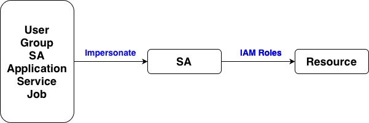

Google APIs & Services
Controls access to Google APIs & ddata scope
Enable APIs & Services
List the enabled APIs
Library
API library
Credentials
API Key
- Simple access to public data or non-sensitive APIs
- An API Key belongs to a project
- When no restrictions, the API key can access any enabled APIs in the project
- With restrictions, the API key only can access the selected APIs in the project
- APIs
- Google Map APIs
- Youtube Data API
- Books API
- Knowledge Graph API
- Translation API
OAuth Client ID
- Access on behalf of a user — user login + consent
- Web / mobile / desktop apps with user interaction
- OAuth Client IDs rely on the script/application code to specify what permissions (scopes) it is requesting for each API
- APIs
- Gmail API
- Google Calendar API
- Google Contacts API
- Google Drive API
- Google Sign-In (Authentication)
Service Account (SA)

- Secure server-to-server or service-to-API communication
- Backend systems, automated jobs, compute resources, with fine-grained IAM access control
- SA is a non-human identity, has permission via assigning IAM roles, user/group/SA impersonate the SA
- APIs
- Cloud Storage API
- Cloud Run API
- Kubernetes Engine API
- Cloud Functions API
OAuth consent screen
Contrls how the app asks users for permission to access Google account data
Branding
- Define how the app appears to users, such as app name, app logo, developer contact email, application homepage, privacy policy
Audience
- Define who can use the app
- Internal, users in the same organization
- External + Publish app, any google user
- Test users, specific users
Clients
- Create an OAuth 2.0 Client IDs
Data Access
- Two layers of permission
- Data Access define a whitelist of what permission the app can request
- OAuth flow defines what the acutal permissoins requested in the app
Verificaiton Center
- Verification Center is required to release an OAuth app that accesses sensitive Google user data to the public
- By default, does not need verification, either non-sensitive, or Testing mode's test-user limit (100 users)
Reference